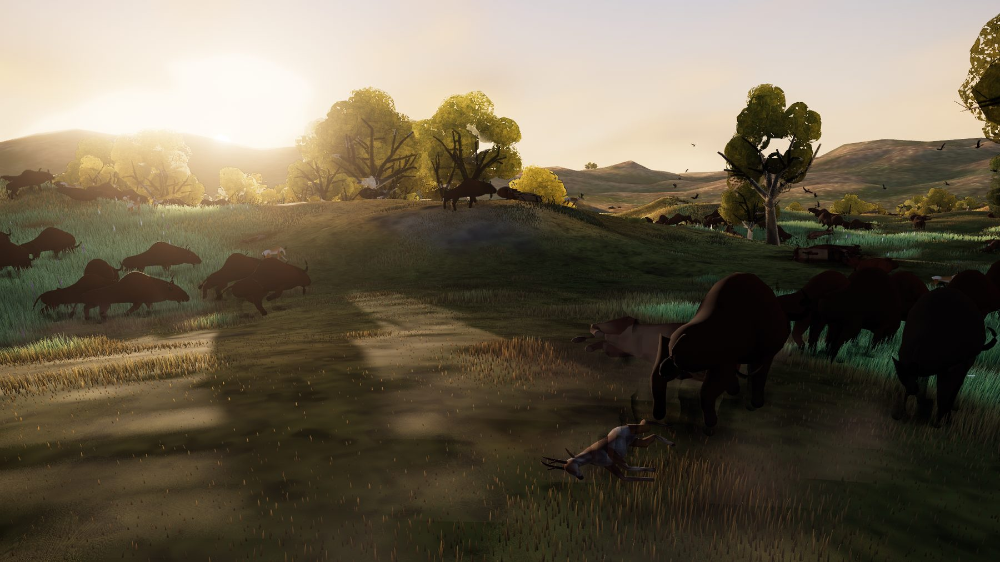
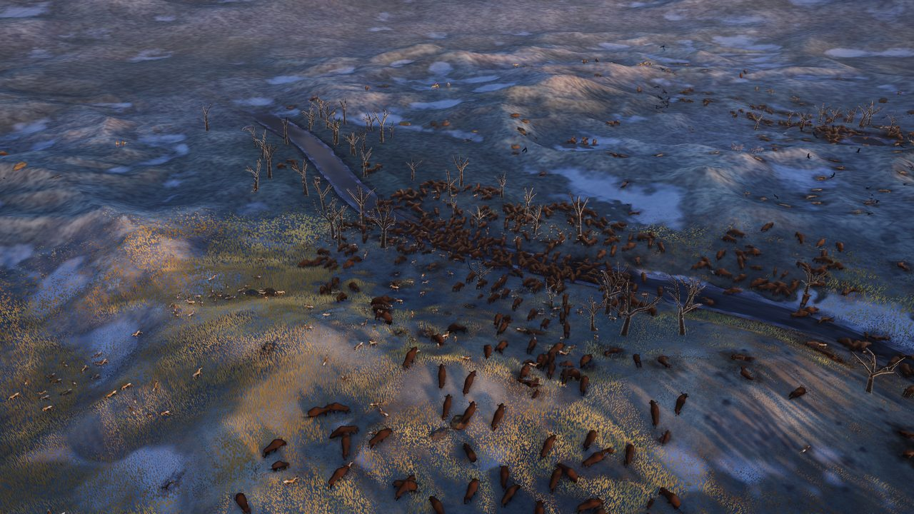
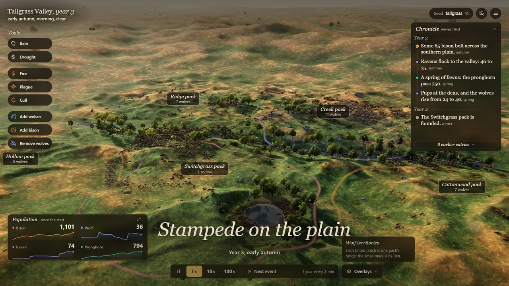
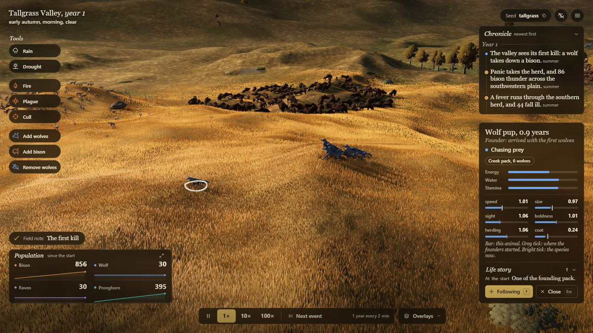
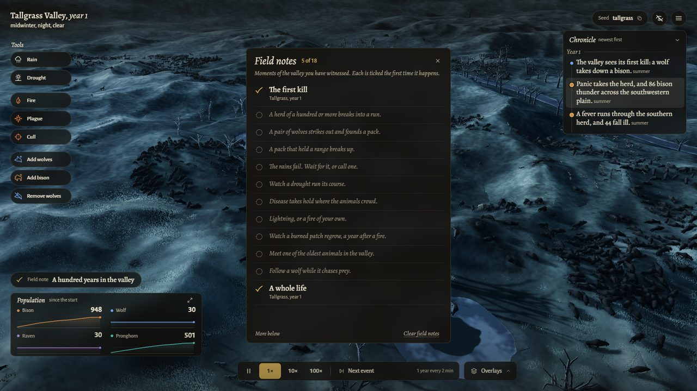

<title>Tallgrass</title>
<link rel="preconnect" href="https://fonts.googleapis.com">
<link rel="preconnect" href="https://fonts.gstatic.com" crossorigin>
<link rel="stylesheet" href="https://fonts.googleapis.com/css2?family=Alegreya:ital,wght@0,500;0,700;1,400;1,500&family=Alegreya+Sans:wght@400;500;700&display=swap">
<style>
/* Layout: a screening-room page. One full-bleed film still with the game's own location slate, then chapters that
   alternate still and text, a chart drawn from a real run, and the controls as a field card. */
:root {
  --ground: #f0f2ec;      /* pale sage paper */
  --raised: #e3e7df;
  --ink: #1b2320;
  --muted: #5d665f;
  --line: #c8cec4;
  --straw: #9a6413;       /* cured-grass gold, darkened to read on paper */
  --bison: #a9562a;
  --wolf: #4e6880;
  --pronghorn: #23837c;
  --scrim: rgba(12, 16, 14, 0.62);
  --display: "Alegreya", "Palatino Linotype", Palatino, Georgia, serif;
  --body: "Alegreya Sans", "Segoe UI", "Helvetica Neue", Arial, sans-serif;
  color-scheme: light;
}
@media (prefers-color-scheme: dark) {
  :root:not([data-theme="light"]) {
    --ground: #101614; --raised: #18201d; --ink: #ece5d2; --muted: #a39f8c; --line: #2c3632;
    --straw: #e2aa4c; --bison: #e0894a; --wolf: #93abc4; --pronghorn: #4fc4bc; --scrim: rgba(6, 9, 8, 0.66);
    color-scheme: dark;
  }
}
:root[data-theme="dark"] {
  --ground: #101614; --raised: #18201d; --ink: #ece5d2; --muted: #a39f8c; --line: #2c3632;
  --straw: #e2aa4c; --bison: #e0894a; --wolf: #93abc4; --pronghorn: #4fc4bc; --scrim: rgba(6, 9, 8, 0.66);
  color-scheme: dark;
}
* { box-sizing: border-box; }
body { background: var(--ground); color: var(--ink); font-family: var(--body); font-size: 17px; line-height: 1.6; }
a { color: inherit; }
:focus-visible { outline: 2px solid var(--straw); outline-offset: 3px; border-radius: 3px; }

.hero { position: relative; color: #f4ecd8; background: #1a1712; }
.hero img { display: block; width: 100%; height: auto; max-height: 720px; object-fit: cover; }
.hero::after { content: ""; position: absolute; inset: 0; background: linear-gradient(180deg, rgba(10,12,10,0.55) 0%, rgba(10,12,10,0) 30%, rgba(10,12,10,0) 48%, rgba(10,12,10,0.78) 100%); pointer-events: none; }
.slate { position: absolute; z-index: 1; top: clamp(14px, 3vw, 32px); left: clamp(16px, 4vw, 48px); font-family: var(--display); line-height: 1.25; text-shadow: 0 1px 8px rgba(0,0,0,0.5); }
.slate b { display: block; font-weight: 500; font-size: clamp(17px, 2.1vw, 24px); }
.slate b i { font-weight: 400; }
.slate span { font-family: var(--body); font-size: clamp(13px, 1.3vw, 15px); opacity: 0.85; }
.hero-text { position: absolute; z-index: 1; left: clamp(16px, 4vw, 48px); right: clamp(16px, 4vw, 48px); bottom: clamp(18px, 4vw, 44px); display: grid; gap: 14px; max-width: 760px; }
.hero h1 { margin: 0; font-family: var(--display); font-weight: 700; font-size: clamp(46px, 9vw, 112px); line-height: 0.95; letter-spacing: -0.01em; text-shadow: 0 2px 24px rgba(0,0,0,0.45); }
.hero p { margin: 0; font-size: clamp(16px, 1.9vw, 21px); max-width: 38ch; text-shadow: 0 1px 10px rgba(0,0,0,0.6); }
.play { display: inline-flex; align-items: center; gap: 12px; flex-wrap: wrap; }
.play a { display: inline-block; padding: 11px 20px; border-radius: 999px; background: #e2aa4c; color: #1a1408; font-weight: 700; text-decoration: none; }
.play a:hover { background: #f0bf63; }
.play small { font-size: 14px; opacity: 0.85; text-shadow: 0 1px 8px rgba(0,0,0,0.6); }

main { padding-inline: clamp(16px, 4vw, 48px); padding-block: clamp(36px, 6vw, 72px); max-width: 1180px; margin: 0 auto; display: grid; gap: clamp(48px, 8vw, 96px); }
.chapter { display: grid; grid-template-columns: minmax(0, 7fr) minmax(0, 5fr); gap: clamp(20px, 3.5vw, 44px); align-items: center; }
.chapter.flip { grid-template-columns: minmax(0, 5fr) minmax(0, 7fr); }
.chapter.flip figure { order: 2; }
.chapter figure { margin: 0; }
.chapter img { display: block; width: 100%; height: auto; border-radius: 4px; }
.chapter figcaption { margin-top: 8px; font-size: 14px; color: var(--muted); }
.kicker { margin: 0 0 6px; font-family: var(--display); font-style: italic; font-size: 18px; color: var(--straw); }
h2 { margin: 0 0 12px; font-family: var(--display); font-weight: 700; font-size: clamp(28px, 3.6vw, 40px); line-height: 1.1; text-wrap: balance; }
.chapter p { margin: 0 0 12px; max-width: 46ch; }

.numbers { display: grid; grid-template-columns: minmax(0, 1fr); gap: 18px; }
.numbers .intro { max-width: 60ch; }
.chart { background: var(--raised); border-radius: 6px; padding: clamp(12px, 2.5vw, 24px); overflow-x: auto; }
.chart svg { display: block; width: 100%; min-width: 520px; height: auto; }
.chart .axis { stroke: var(--line); stroke-width: 1; }
.chart .base { stroke: var(--muted); stroke-width: 1; stroke-dasharray: 3 4; }
.chart text { fill: var(--muted); font-family: var(--body); font-size: 12px; font-variant-numeric: tabular-nums; }
.chart .lab { font-weight: 700; font-size: 13px; }
.facts { display: grid; grid-template-columns: repeat(auto-fit, minmax(230px, 1fr)); gap: 18px 28px; margin: 0; padding: 0; list-style: none; }
.facts li { border-top: 1px solid var(--line); padding-top: 10px; }
.facts b { display: block; font-family: var(--display); font-size: 24px; line-height: 1.2; font-variant-numeric: tabular-nums; }
.facts span { color: var(--muted); font-size: 15px; }

.field { display: grid; grid-template-columns: minmax(0, 1fr) minmax(0, 1.3fr); gap: clamp(20px, 4vw, 48px); border-top: 1px solid var(--line); padding-top: clamp(24px, 4vw, 40px); }
.keys { display: grid; grid-template-columns: max-content minmax(0, 1fr); gap: 6px 14px; margin: 0; font-size: 15px; }
.keys dt { font-variant-numeric: tabular-nums; }
.keys kbd { display: inline-block; min-width: 1.9em; padding: 1px 7px; border: 1px solid var(--line); border-bottom-width: 2px; border-radius: 5px; background: var(--raised); font-family: var(--body); font-size: 13px; text-align: center; }
.keys dd { margin: 0; color: var(--muted); }
footer { padding-inline: clamp(16px, 4vw, 48px); padding-block: 28px 40px; max-width: 1180px; margin: 0 auto; color: var(--muted); font-size: 14px; }

@media (max-width: 760px) {
  .chapter, .chapter.flip, .field { grid-template-columns: minmax(0, 1fr); }
  .chapter.flip figure { order: 0; }
  .hero img { min-height: 520px; }
}
@media (prefers-reduced-motion: reduce) { * { transition: none !important; } }
</style>

<header class="hero">
  
  <div class="slate"><b>Tallgrass Valley, <i>year 3</i></b><span>late summer, evening, clear</span></div>
  <div class="hero-text">
    <h1>Tallgrass</h1>
    <p>A living prairie you can leave running on a second monitor. Bison graze, pronghorn browse, wolf packs hold their ground, and over a thousand generations the valley finds its own balance.</p>
    <div class="play"><a href="https://tallgrass.stewartgregerson.workers.dev">Play in your browser</a><small>Chrome or Edge. Click once to turn on sound.</small></div>
  </div>
</header>

<main>
  <section class="chapter" aria-labelledby="watch">
    <figure>
      
      <figcaption>Winter dawn: snow in the hollows and the herd along the creek.</figcaption>
    </figure>
    <div>
      <p class="kicker">Watch</p>
      <h2 id="watch">It films itself</h2>
      <p>Leave it alone and a documentary camera takes over. It cuts between hunts, kills, herds and wide vistas, and a narrator speaks when something big happens: a drought settling in, a stampede, a new pack taking a range.</p>
      <p>Seasons turn every thirty seconds at normal speed. Grass greens and cures, snow settles in the hollows and melts, and a valley year passes in two minutes.</p>
    </div>
  </section>

  <section class="chapter flip" aria-labelledby="poke">
    <figure>
      
      <figcaption>Wolf territories: each ring is one pack's range.</figcaption>
    </figure>
    <div>
      <p class="kicker">Step in</p>
      <h2 id="poke">Every change ripples</h2>
      <p>Send rain or drought, start a fire, loose a plague, cull the herd, bring wolves back or take them away. The grass answers first, then the grazers, then the hunters and the ravens that follow them.</p>
      <p>Five challenges set you a goal in a named world, from bringing wolves home to carrying every species through the dry years.</p>
    </div>
  </section>

  <section class="chapter" aria-labelledby="follow">
    <figure>
      
      <figcaption>Riding along with an alpha female on a hunt.</figcaption>
    </figure>
    <div>
      <p class="kicker">Follow</p>
      <h2 id="follow">One life at a time</h2>
      <p>Click any animal for its story: where it was born, its pack, its traits set against the founders' and the species' now, and an In memoriam card when it dies.</p>
      <p>Every animal carries heritable speed, size, sight, boldness, herding, coat and litter genes, and the herds change under the wolves' pressure.</p>
    </div>
  </section>

  <section class="chapter flip" aria-labelledby="notes">
    <figure>
      
      <figcaption>Field notes, dated by valley and year.</figcaption>
    </figure>
    <div>
      <p class="kicker">Notice</p>
      <h2 id="notes">Keep field notes</h2>
      <p>A naturalist's notebook of eighteen moments to witness: the first kill, a stampede of a hundred bison, a pack founded and lost, a burn greening up, a whole life read to its end.</p>
    </div>
  </section>

  <section class="numbers" aria-labelledby="measured">
    <div class="intro">
      <p class="kicker">Measured</p>
      <h2 id="measured">A balance you can check</h2>
      <p>The valley is a simulation first. The same rules run headless for thousands of years across many worlds, and the game only shows what they produce.</p>
    </div>
    <div class="chart" role="img" aria-label="Sixty valley-years of one world: bison and pronghorn rise and fall about once a decade while wolves hold steady near their average.">
      <svg viewBox="0 0 800 270" xmlns="http://www.w3.org/2000/svg">
        <line class="axis" x1="56" y1="236" x2="780" y2="236"/>
        <line class="axis" x1="56" y1="20" x2="56" y2="236"/>
        <line class="base" x1="56" y1="149.6" x2="780" y2="149.6"/>
        <text x="48" y="240" text-anchor="end">0%</text>
        <text x="48" y="153.6" text-anchor="end">100%</text>
        <text x="48" y="67.2" text-anchor="end">200%</text>
        <line class="axis" x1="52" y1="63.2" x2="56" y2="63.2"/>
        <text x="56" y="256" text-anchor="middle">year 100</text>
        <text x="424.1" y="256" text-anchor="middle">year 130</text>
        <text x="780" y="256" text-anchor="end">year 159</text>
        <polyline fill="none" stroke="var(--pronghorn)" stroke-width="2" stroke-linejoin="round" points="56.0,176.6 68.3,185.3 80.5,192.0 92.8,203.0 105.1,191.4 117.4,164.3 129.6,121.4 141.9,75.5 154.2,58.2 166.4,126.6 178.7,187.9 191.0,212.9 203.3,217.0 215.5,207.1 227.8,199.4 240.1,174.1 252.3,104.8 264.6,51.0 276.9,103.9 289.2,161.6 301.4,155.7 313.7,174.3 326.0,177.7 338.2,163.4 350.5,148.2 362.8,132.1 375.1,130.4 387.3,126.8 399.6,133.5 411.9,171.1 424.1,177.7 436.4,179.3 448.7,181.8 460.9,183.0 473.2,182.7 485.5,155.9 497.8,129.8 510.0,94.6 522.3,133.0 534.6,184.5 546.8,181.5 559.1,131.7 571.4,75.9 583.7,39.7 595.9,20.0 608.2,133.2 620.5,182.4 632.7,191.7 645.0,175.0 657.3,161.6 669.6,155.1 681.8,133.9 694.1,124.1 706.4,126.8 718.6,147.2 730.9,165.6 743.2,157.1 755.5,148.2 767.7,170.5 780.0,171.1"/>
        <polyline fill="none" stroke="var(--bison)" stroke-width="2.6" stroke-linejoin="round" points="56.0,123.7 68.3,111.3 80.5,147.6 92.8,163.2 105.1,171.0 117.4,169.3 129.6,161.4 141.9,149.0 154.2,122.2 166.4,110.3 178.7,119.6 191.0,148.8 203.3,172.7 215.5,177.5 227.8,177.7 240.1,167.9 252.3,150.4 264.6,140.0 276.9,140.4 289.2,131.8 301.4,118.9 313.7,114.2 326.0,142.8 338.2,175.5 350.5,181.1 362.8,171.5 375.1,164.3 387.3,149.3 399.6,135.7 411.9,133.4 424.1,148.4 436.4,161.2 448.7,163.6 460.9,156.4 473.2,141.8 485.5,119.1 497.8,121.1 510.0,110.5 522.3,127.5 534.6,156.2 546.8,172.4 559.1,177.8 571.4,164.8 583.7,162.2 595.9,150.6 608.2,131.0 620.5,126.8 632.7,122.4 645.0,95.5 657.3,107.3 669.6,137.4 681.8,151.4 694.1,157.9 706.4,172.6 718.6,186.6 730.9,189.1 743.2,191.1 755.5,190.9 767.7,181.4 780.0,158.5"/>
        <polyline fill="none" stroke="var(--wolf)" stroke-width="2.2" stroke-linejoin="round" points="56.0,156.5 68.3,144.7 80.5,135.8 92.8,135.8 105.1,144.7 117.4,147.6 129.6,156.5 141.9,162.3 154.2,152.0 166.4,156.5 178.7,144.7 191.0,146.1 203.3,144.7 215.5,150.6 227.8,155.0 240.1,159.4 252.3,159.4 264.6,138.8 276.9,153.5 289.2,153.5 301.4,143.2 313.7,147.6 326.0,150.6 338.2,153.5 350.5,155.0 362.8,156.5 375.1,147.6 387.3,152.0 399.6,138.8 411.9,144.7 424.1,156.5 436.4,141.7 448.7,153.5 460.9,156.5 473.2,162.3 485.5,153.5 497.8,152.0 510.0,135.8 522.3,138.8 534.6,144.7 546.8,149.1 559.1,153.5 571.4,150.6 583.7,150.6 595.9,144.7 608.2,141.7 620.5,144.7 632.7,150.6 645.0,150.6 657.3,147.6 669.6,149.1 681.8,162.3 694.1,147.6 706.4,144.7 718.6,144.7 730.9,152.0 743.2,150.6 755.5,152.0 767.7,153.5 780.0,153.5"/>
        <text class="lab" x="64" y="34" fill="var(--bison)" style="fill: var(--bison)">bison</text>
        <text class="lab" x="116" y="34" style="fill: var(--pronghorn)">pronghorn</text>
        <text class="lab" x="200" y="34" style="fill: var(--wolf)">wolves</text>
        <text x="260" y="34">each as a share of its own average, annual means</text>
      </svg>
    </div>
    <ul class="facts">
      <li><b>20 worlds, 1,000 generations</b><span>Each world ran until its bison passed a thousand generations, 1,220 to 1,402 valley-years. Every species survived in 19 of the 20.</span></li>
      <li><b>Booms about once a decade</b><span>Bison rise and fall on a roughly ten-year cycle and recover from a crash in about eight years. Wolves hold steadier than their prey.</span></li>
      <li><b>Shocks heal</b><span>After a 70% cull every surviving world returned to its old range. After a severe drought about nine in ten did.</span></li>
    </ul>
  </section>

  <section class="field" aria-labelledby="keys">
    <div>
      <p class="kicker">At the controls</p>
      <h2 id="keys">A short field card</h2>
      <p>One valley-year is 2 minutes at 1x, 12 seconds at 10x. The world opens in late summer, golden, on a valley called Tallgrass; any other seed grows a different valley with its own history.</p>
    </div>
    <dl class="keys">
      <dt><kbd>Space</kbd></dt><dd>pause</dd>
      <dt><kbd>1</kbd> <kbd>2</kbd> <kbd>3</kbd></dt><dd>speed: 1x, 10x, 100x</dd>
      <dt><kbd>N</kbd></dt><dd>fly to the next event</dd>
      <dt><kbd>C</kbd></dt><dd>cinematic documentary, with captions</dd>
      <dt><kbd>H</kbd></dt><dd>ambient view, no interface</dd>
      <dt><kbd>V</kbd></dt><dd>narrator on or off</dd>
      <dt><kbd>G</kbd> <kbd>E</kbd></dt><dd>population graph, evolution chart</dd>
      <dt><kbd>P</kbd></dt><dd>save a clean photo of the view</dd>
      <dt><kbd>F</kbd></dt><dd>follow the selected animal</dd>
    </dl>
  </section>
</main>

<footer>Made in one long night in October 2026 for Stewart Gregerson: a TypeScript simulation, a Three.js renderer, and many rounds of critique. Sound and narration by ElevenLabs.</footer>
